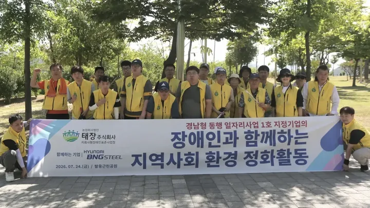
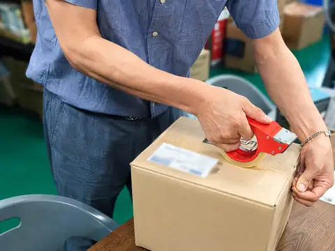

WHAT WE DO
태장이 하는 일
기업·기관이 함께 만들 수 있는 현재 사업과 협력 가능 업무를 소개합니다.
CURRENT OPERATIONS
맡길 수 있는 일과 협력
태장은 문화 굿즈, 지역사회 활동, 기업의 반복 업무를 실제 운영 범위에 맞춰 함께 검토합니다.


BUSINESS IN DEVELOPMENT
개발 중인 사업

기업·기관이 함께 만들 수 있는 현재 사업과 협력 가능 업무를 소개합니다.
태장은 문화 굿즈, 지역사회 활동, 기업의 반복 업무를 실제 운영 범위에 맞춰 함께 검토합니다.

